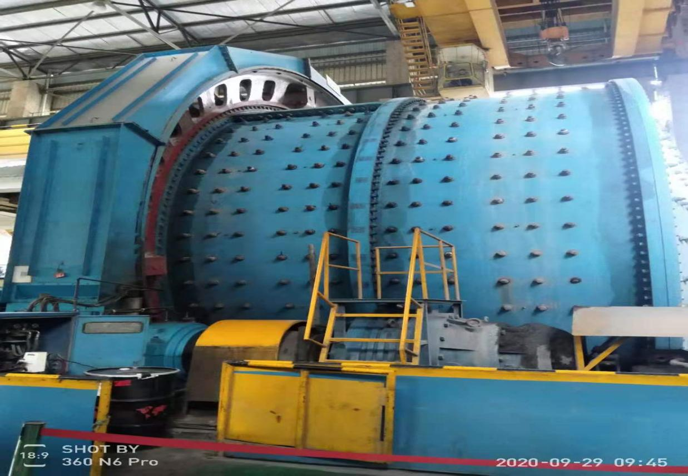
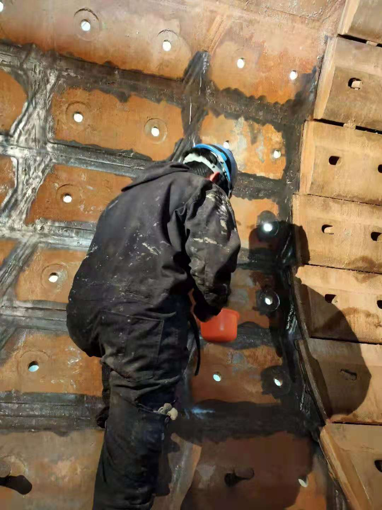
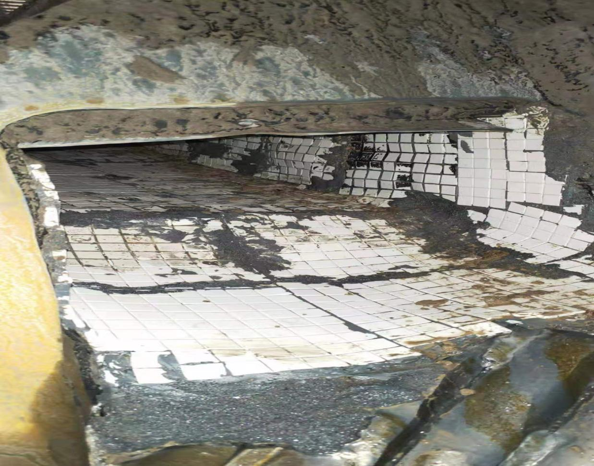
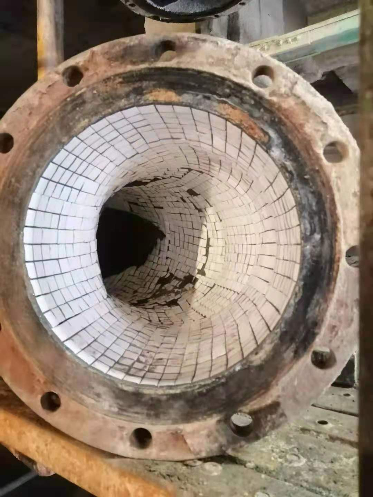
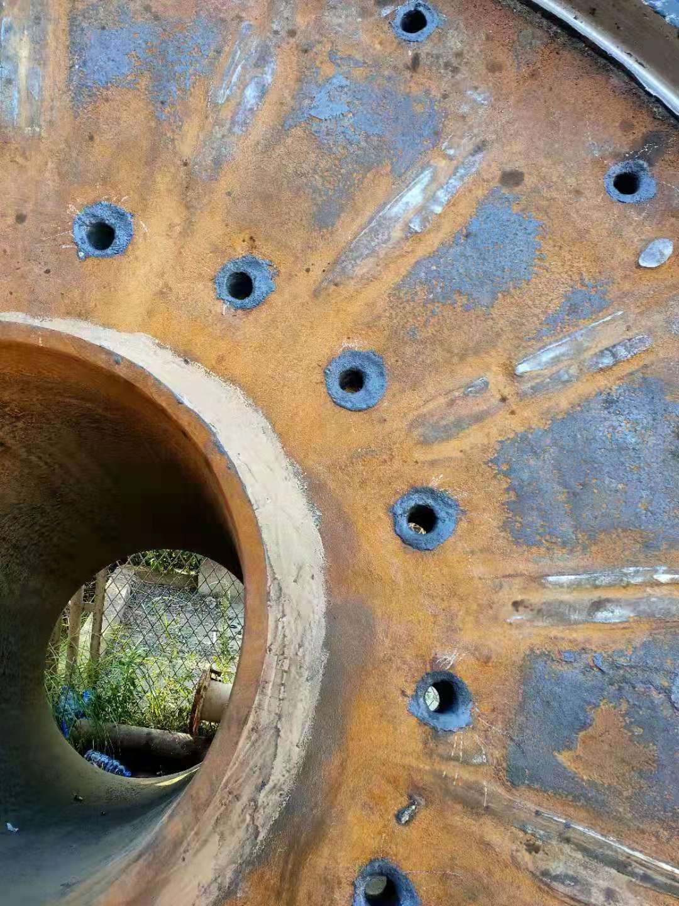
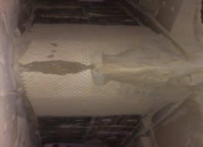

耐磨修复
磨机全部件耐磨修复与密封 — 陶瓷片 + Resimac 高性能涂层粘接
覆盖空心轴密封、筒体磨损沟槽、进料溜槽、进出料螺旋衬套等磨机关键部位，以陶瓷片镶嵌配合英国Resimac 高性能涂层陶瓷粘接剂实现超长耐磨寿命。
空心轴密封修复
空心轴是支撑磨机运行的主要部件（前后端盖均装有），长期运行出现缝隙漏浆导致严重磨损。我们通过缝隙密封 + 表面涂层处理恢复其功能，2015 年至今运行稳定。
筒体磨损沟槽修复
筒体安装耐磨衬板之间的间隙因流沙产生磨损槽，不及时处理会导致裂纹甚至断裂。2017 年 6 月我公司对磨损槽进行耐磨保护；2020 年 6 月拆开检查基本无磨损，客户随即要求将其他位置也全部补齐。
陶瓷片耐磨衬套
在进料/出料螺旋衬套上镶嵌陶瓷片，增加耐磨性能、减少衬套损耗。使用两年的螺旋，陶瓷片仍牢固粘接、基本无磨损。相比原锰 13/16 衬套每 3-4 年需更换，寿命成倍提升。
为什么陶瓷片不易脱落？
更多应用
- Resimac 高性能涂层粘接材料粘接力极强，陶瓷片五面均被牢固粘接
- 陶瓷片小片四周被有效包裹，即便受冲击也仅小片碎裂不脱落
- 钢球与矿料一起加入缓冲了冲击力
更多应用
- 进料溜槽 / 出料溜槽陶瓷片衬里 — 使用一年基本无磨损
- 管道内衬陶瓷片弯头 — 2020 年 6 月检查基本未磨损
- 泵出口直管 — 2018 年 6 月制作，使用至今（原管道半年即损）
- 分料小车 / 输送机下料溜槽 — 常规衬板仅用 5~6 个月，陶瓷片可用数年





